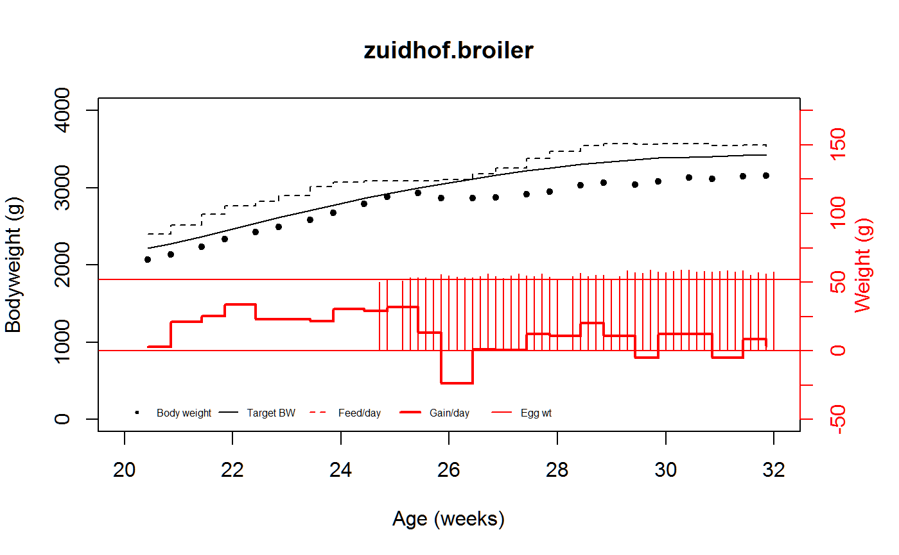

zuidhof.broiler.RdDaily weight, feed, egg measurements for a broiler chicken
A data frame with 59 observations on the following 6 variables.
bwBody weight, grams
targetbwTarget body weight, grams
adfiAverage daily feed intake, grams
adgAverage daily gain, grams
eggwtEgg weight, grams
ageAge, days
Using graphs like the one in the examples section, the authors discovered that a drop in body weight commonly occurs around the time of first egg production.
Used with permission of Martin Zuidhof.
Martin J. Zuidhof and Robert A. Renema and Frank E. Robinson, (2008). Understanding Multiple, Repeated Animal Measurements with the Help of PROC GPLOT. SAS Global Forum 2008, Paper 250-2008. https://support.sas.com/resources/papers/proceedings/pdfs/sgf2008/250-2008.pdf
library(agridat) data(zuidhof.broiler) dat <- zuidhof.broiler dat <- transform(dat, age=age/7) # Change days into weeks # Reproducing figure 1 of Zuidhof et al. # Plot using left axis op <- par(mar=c(5,4,4,4)) plot(bw~age, dat, xlab="Age (weeks)", ylab="Bodyweight (g)", main="zuidhof.broiler", xlim=c(20,32), ylim=c(0,4000), pch=20)# Now plot using the right axis par(new=TRUE) plot(adfi~age, subset(dat, !is.na(adfi)), xlab="", ylab="", xlim=c(20,32), xaxt="n",yaxt="n", ylim=c(-50,175), type="s", lty=2)legend(20, -40, c("Body weight", "Target BW", "Feed/day", "Gain/day", "Egg wt"), bty="n", cex=.5, ncol=5, col=c("black","black","red","red","red"), lty=c(-1,1,2,1,1), lwd=c(1,1,1,2,1), pch=c(20,-1,-1,-1,-1))